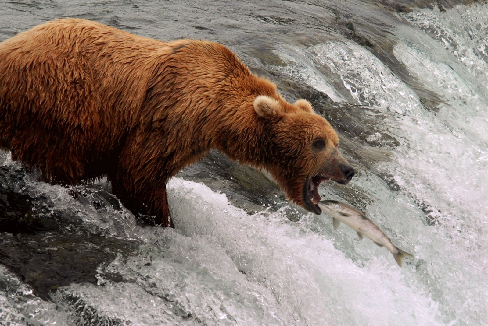
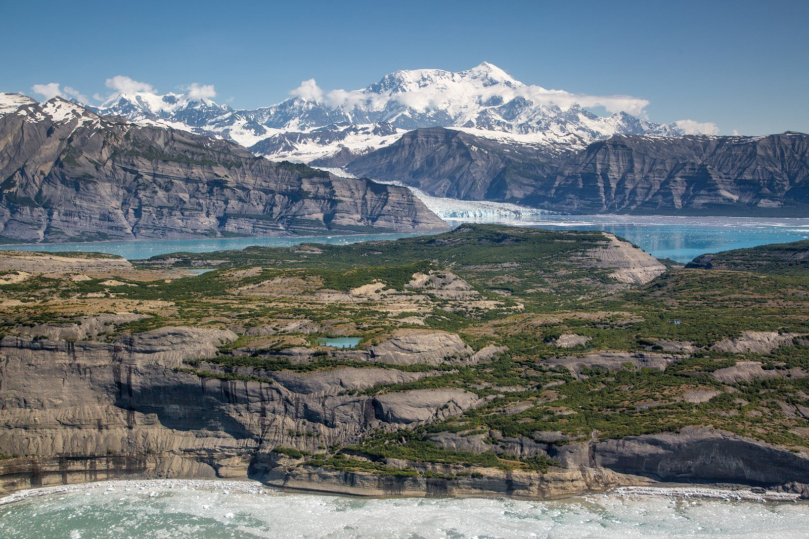

AMERICAN SOUTHWEST
Grand CanyonGrand Canyon
South Rim views, Yavapai Geology Museum and a helicopter flight.
Open park guide →NATIONAL PARKS / PERSONAL JOURNEYS
Understand the landscape and plan your visit.
Personal experiences, landscape stories and daily routes in one place.
CHOOSE YOUR PARK
Choose a park, then explore the full route and nearby places.
AMERICAN SOUTHWEST
South Rim views, Yavapai Geology Museum and a helicopter flight.
Open park guide →
AMERICAN SOUTHWEST
Salt flats, dunes and colorful hills: a stop-by-stop introduction to the desert.
Open park guide →
ALASKA
Sail from Seward to where valley glaciers meet the ocean. The coastline reveals the shapes carved by ice.
Open park guide →
ALASKA
Explore the interior wilderness by bus, then connect distant mountains with nearby trails and visitor-center exhibits.
Open park guide →
ALASKA
Bear viewing is more than a waterfall platform: understand the river, food and seasons, and give wildlife space.
Open park guide →
ALASKA
Start with exhibits and short trails at Copper Center. Reaching Kennecott calls for a separate extension.
Open park guide →FOLLOW THE JOURNEY
AROUND THE PARKS
Explore these stops separately from the national parks themselves.
Sandstone, the Colorado River, Lake Powell and the dam.
Open nearby guide →Compare a short state-recreation-site walk with a guided glacier hike, driving yourself or taking an Anchorage transfer.
View transport and a day-trip plan →City supplies, travel buffers and SJC/LAS lounge locations.
Anchorage guide →